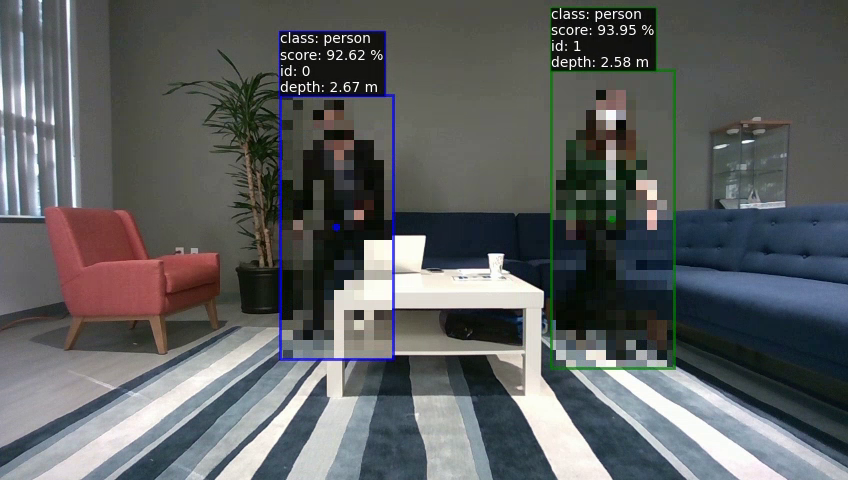

yolo

|
-
ifxdaq.ai.yolo.stage.yolo(camera_dir, model='yolov8', task='det', model_size='n', threshold=0.4, nms=0.5, classes=None, output_name=None)
Detect objects in the given CAMERA_DIR(s) using YOLOv8.
- Parameters:
camera_dir (Sequence[Path]) – Camera dir(s) to process. model (str) – Model to use. task (Literal['det', 'seg', 'pose']) – model types, i.e. detector, segmentation, keypoints model_size (Literal['n', 's', 'm', 'l', 'x']) – size of model to use from ultralytics zoo, trades precision vs inference time threshold (float) – Detection threshold. nms (float) – Non-maximum suppression threshold. classes (Optional[List[str]]) – List of classes to detect. Default: All available classes for the selected model. output_name (Optional[str]) – Optional individual name for the output directory.
- Return type:
List[Path]
- Returns:
List of folders with processed data.
|